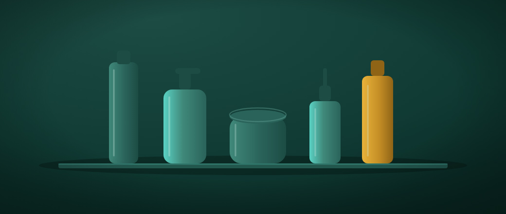
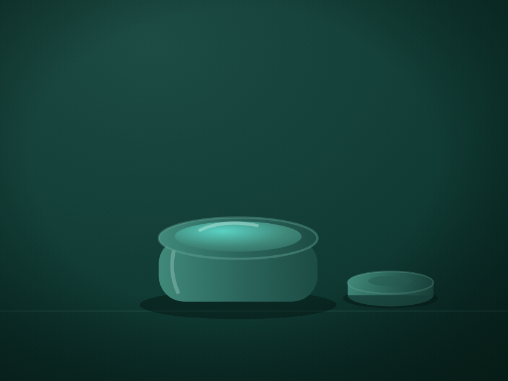
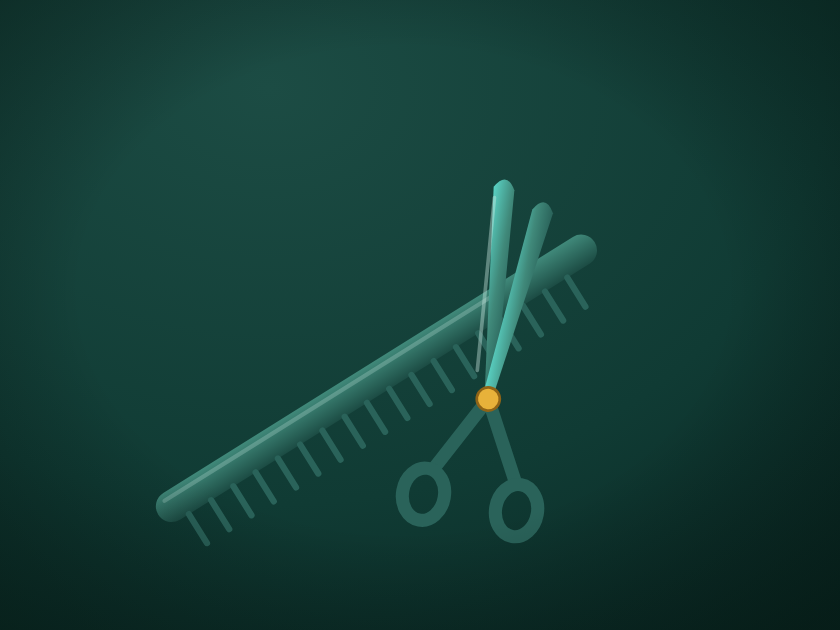
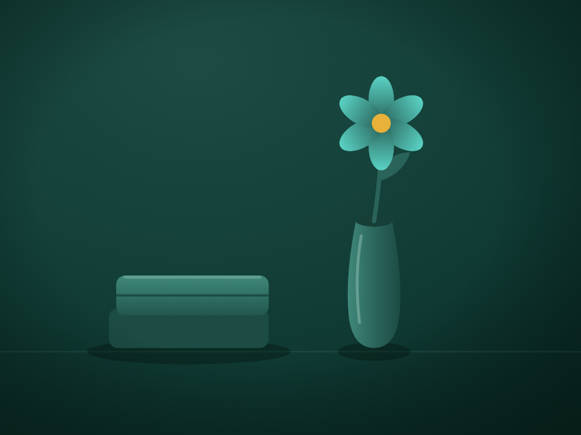

hero · poste de coiffure
7,5/10Un fauteuil, un miroir rond éclairé, un comptoir continu, une bouteille ambre comme unique note chaude. Le pendant « salon » du poisson.
Ouvrir le SVG →Laboratoire · style maison
Preuve que le style d'illustration duotone de mavitrine se généralise :
le même moteur, sans aucun réglage propre au restaurant, produit un jeu cohérent pour une catégorie
complètement différente. Il suffit de changer la liste des sujets (illus-category.js).
Le constat : le salon plafonne à 7,4/10 — pratiquement la même note que le restaurant (7,5). Même langage : rampe teal, une seule note ambre, sobriété. Le style maison n'est pas propre au poisson ; c'est un vrai générateur. Les quatre autres catégories ne sont plus qu'un lot mécanique.
Trajectoire : 6,8 → 7,4 (pic au tour 1), puis plateau — les tours plus chargés ont été rejetés.
Un fauteuil, un miroir rond éclairé, un comptoir continu, une bouteille ambre comme unique note chaude. Le pendant « salon » du poisson.
Ouvrir le SVG →
La plus réussie : un trio de flacons composé sur une étagère, une note ambre discrète. Sobriété.
Ouvrir le SVG →
Un pot de crème ouvert, couvercle posé à côté, dans un grand vide. Une seule idée, nette.
Ouvrir le SVG →
Ciseaux croisés sur un peigne, pivot ambre. La plus faible du lot, mais lisible et propre.
Ouvrir le SVG →
Une fleur dans un vase élancé, une serviette pliée, cœur ambre. Détail d'ambiance calme.
Ouvrir le SVG →